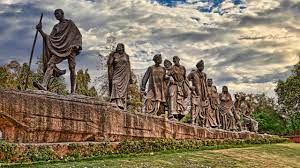
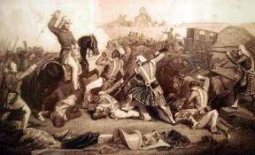
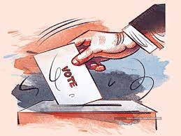
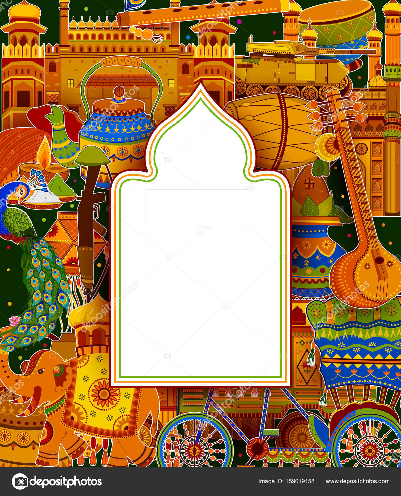
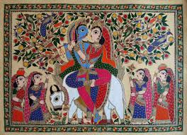
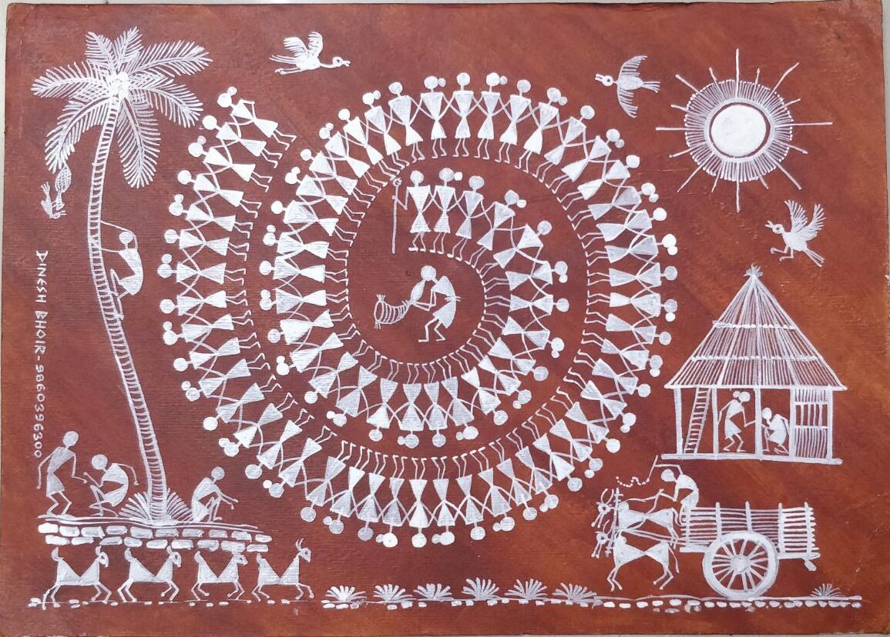
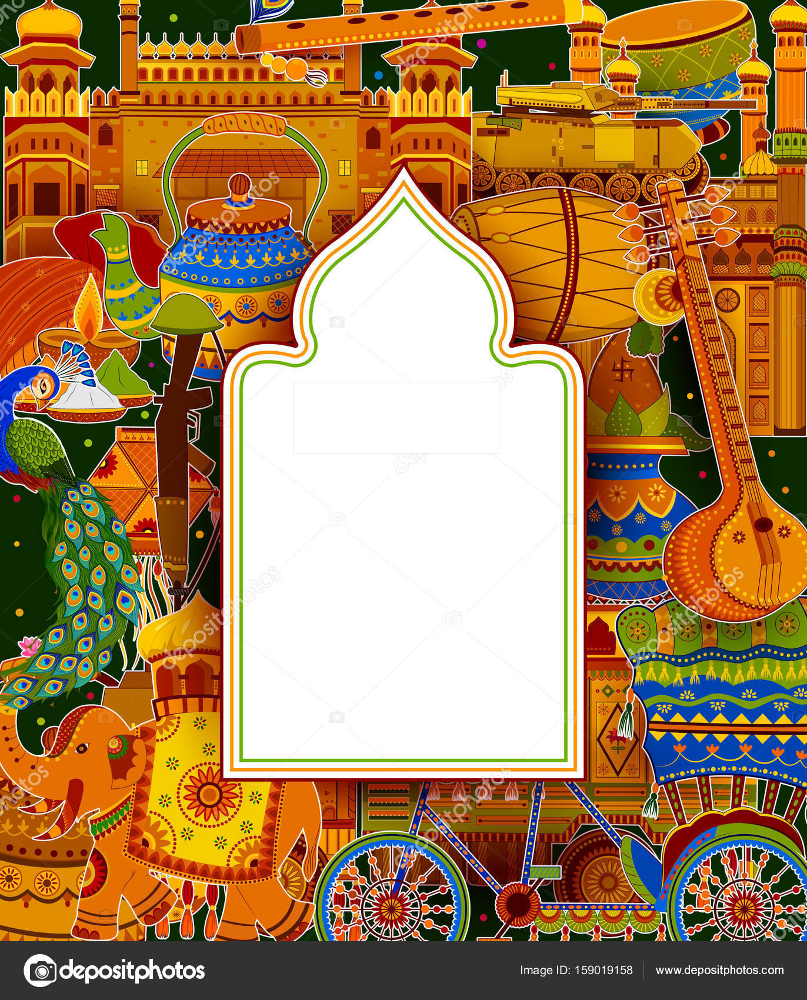
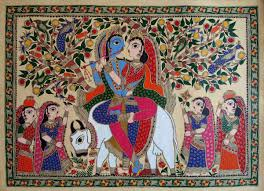
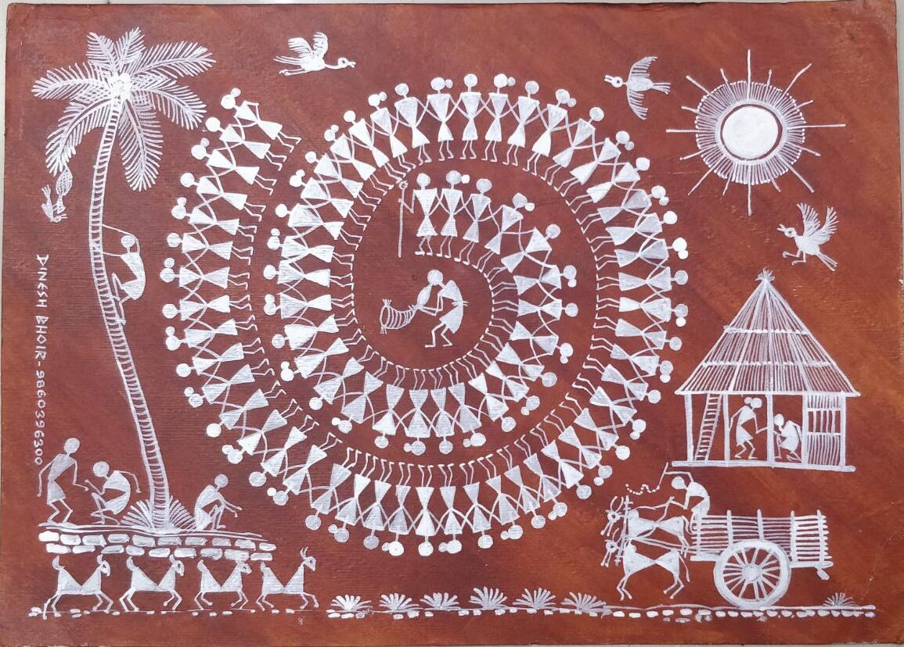

The Indian independence movement was a series of historic events with the ultimate aim of ending British rule in India also known as British Raj. It lasted from 1857 to 1947.
The first nationalistic revolutionary movement for Indian independence emerged from Bengal. It later took root in the newly formed Indian National Congress with prominent moderate leaders seeking the right to appear for Indian Civil Service examinations in British India, as well as more economic rights for natives. The first half of the 20th century saw a more radical approach towards self-rule by the Lal Bal Pal triumvirate, Aurobindo Ghosh and V. O. Chidambaram Pillai.

The stages of the independence struggle in the 1920s were characterized by the leadership of Mahatma Gandhi and Congress' adoption of Gandhi's policy of non-violence and civil disobedience. Some of the leading followers of Gandhi's ideology were Jawaharlal Nehru, Vallabhbhai Patel, Abdul Ghaffar Khan, Maulana Azad, and others. Intellectuals such as Rabindranath Tagore, Subramania Bharati, and Bankim Chandra Chattopadhyay spread patriotic awareness. Female leaders like Sarojini Naidu, Vijaya Lakshmi Pandit, Pritilata Waddedar, and Kasturba Gandhi promoted the emancipation of Indian women and their participation in the freedom struggle.

Few leaders followed a more violent approach. This became especially popular after the Rowlatt Act, which permitted indefinite detention. The Act sparked protests across India, especially in the Punjab province, where they were violently suppressed in the Jallianwala Bagh massacre.
The Indian independence movement was in constant ideological evolution. Essentially anti-colonial, it was supplemented by visions of independent, economic development with a secular, democratic, republican, and civil-libertarian political structure. After the 1930s, the movement took on a strong socialist orientation. It culminated in the Indian Independence Act 1947, which ended Crown suzerainty and partitioned British Raj into Dominion of India and Dominion of Pakistan.
click on india to unwind
UNWINDING
I
N
D
I
A
INDEPENDENCE STRUGGLE
NEW ERA (Post-Independence)
The history of independent India began when the country became an independent nation within the British Commonwealth on 15 August 1947.
The nation has faced religious violence, naxalism, terrorism and regional separatist insurgencies. India has unresolved territorial disputes with China which escalated into a war in 1962 and 1967, and with Pakistan which resulted in wars in 1947, 1965, 1971 and 1999. India was neutral in the Cold War, and was a leader in the Non-Aligned Movement. However, it made a loose alliance with the Soviet Union from 1971, when Pakistan was allied with the United States and the People's Republic of China. India is a nuclear-weapon state, having conducted its first nuclear test in 1974, followed by another five tests in 1998. From the 1950s to the 1980s, India followed socialist-inspired policies. The economy was influenced by extensive regulation, protectionism and public ownership, leading to pervasive corruption and slow economic growth. Beginning in 1991, economic liberalisation in India has transformed India into the third largest and one of the fastest-growing economies in the world despite following Dirigisme economic
India is a nuclear-weapon state, having conducted its first nuclear test in 1974, followed by another five tests in 1998. From the 1950s to the 1980s, India followed socialist-inspired policies. The economy was influenced by extensive regulation, protectionism and public ownership, leading to pervasive corruption and slow economic growth. Beginning in 1991, economic liberalisation in India has transformed India into the third largest and one of the fastest-growing economies in the world despite following Dirigisme economic
From being a relatively struggling country in its formative years,[3] the Republic of India has emerged as a fast growing G20 major economy.[4][5] India has sometimes been referred to as a great power and a potential superpower given its large and growing economy, military and population.
The nation has faced religious violence, naxalism, terrorism and regional separatist insurgencies. India has unresolved territorial disputes with China which escalated into a war in 1962 and 1967, and with Pakistan which resulted in wars in 1947, 1965, 1971 and 1999. India was neutral in the Cold War, and was a leader in the Non-Aligned Movement. However, it made a loose alliance with the Soviet Union from 1971, when Pakistan was allied with the United States and the People's Republic of China.
India is a nuclear-weapon state, having conducted its first nuclear test in 1974, followed by another five tests in 1998. From the 1950s to the 1980s, India followed socialist-inspired policies. The economy was influenced by extensive regulation, protectionism and public ownership, leading to pervasive corruption and slow economic growth. Beginning in 1991, economic liberalisation in India has transformed India into the third largest and one of the fastest-growing economies in the world despite following Dirigisme economic From being a relatively struggling country in its formative years,[3] the Republic of India has emerged as a fast growing G20 major economy.[4][5] India has sometimes been referred to as a great power and a potential superpower given its large and growing economy, military and population.
DEMOCARACY IN INDIA
The democratic government in India is the largest one. The beginning of the democratic system in India was when the Constitution of India came into effect on 26th January 1950. Democratic India reveals that for choosing representatives through the election, every citizen of India has the right to vote without any discrimination irrespective of any creed, caste, religion, region, and sex. The principles on which the democratic government of India is based are liberty, equality, fraternity, and justice. In India, there is a state government and a central government which means it is a federal form of government. The government i.e. at the center and the state follows the democratically elected government respectively and the parliament’s two houses – Rajya Sabha and Lok Sabha. 
The country’s president (the official head) is chosen by the two governments i.e., the central and the state. The beginning of the democratic system was put a way forward when the election was held for the first time, to say more prominently when the first government was created by the people’s vote. The election in India for the first time was noticed to be one of the biggest experiments in the world’s democracy. Based on the universal adult franchise the elections were conducted, according to the universal adult franchise, the citizens of India who are 18 years or above 18 years have the right to vote and form government irrespective of their religion, culture, creed, sex, region, and caste. As this was the beginning of the democratic system in India, the procedure of the election was new to the citizens as well as those who are conducting it. The election procedure occurred for about four months which was from October 25, 1951, to February 21, 1952. The election was contested by 14 national parties along with regional parties (63) and several candidates were independent. By getting the majority of votes and majority of the seats, the National Congress party won the election for the first time in India.
The country’s president (the official head) is chosen by the two governments i.e., the central and the state. The beginning of the democratic system was put a way forward when the election was held for the first time, to say more prominently when the first government was created by the people’s vote. The election in India for the first time was noticed to be one of the biggest experiments in the world’s democracy. Based on the universal adult franchise the elections were conducted, according to the universal adult franchise, the citizens of India who are 18 years or above 18 years have the right to vote and form government irrespective of their religion, culture, creed, sex, region, and caste. As this was the beginning of the democratic system in India, the procedure of the election was new to the citizens as well as those who are conducting it. The election procedure occurred for about four months which was from October 25, 1951, to February 21, 1952. The election was contested by 14 national parties along with regional parties (63) and several candidates were independent. By getting the majority of votes and majority of the seats, the National Congress party won the election for the first time in India.
INDIAN IMPACT
India is one of the fastest growing economies of the world and is poised to continue on this path, with aspirations to reach high middle income status by 2047, the centenary of Indian independence. It is also committed to ensuring that its continued growth path is equipped to deal with the challenges of climate change, and in line with its goal of achieving net-zero emissions by 2070.
The growth of the past two decades has also led to India making remarkable progress in reducing extreme poverty. Between 2011 and 2019, the country is estimated to have halved the share of the population living in extreme poverty - below $2.15 per person per day (2017 PPP) (World Bank Poverty and Inequality Portal and Macro Poverty Outlook, Spring 2023). In recent years
India’s aspiration to achieve high income status by 2047 will need to be realized through a climate-resilient growth process that delivers broad-based gains to the bottom half of the population. Growth-oriented reforms will need to be accompanied by an expansion in good jobs that keeps pace with the number of labor market entrants. At the same time, gaps in economic participation will need to be addressed.
India’s aspiration to achieve high income status by 2047 will need to be realized through a climate-resilient growth process that delivers broad-based gains to the bottom half of the population. Growth-oriented reforms will need to be accompanied by an expansion in good jobs that keeps pace with the number of labor market entrants. At the same time, gaps in economic participation will need to be addressed.
ART AND CULTURE OF INDIA
India is a highly populated country and has a wide variety of religions that have their own traditions and cultures they follow. This diversity has given birth to various types of art in India. This diversity in art and culture has given India a new identity
 The culture of India includes some world-famous monuments like the Taj Mahal, which is known for its structure and the use of stones, which give it a very royal Islamic monument; it is also a UNESCO world heritage site. India is famous for its spicy Indian cuisines, its wide variety of sweets, and diversity in dishes, along with festivals like Holi and Diwali that are celebrated at a grand level throughout India; these are the two festivals wherein people, despite their caste and religion come together to enjoy these festivals with each other. People from outside the world come here to experience the Holi festival and visit the very famous ghats of Banaras for the Ganga Aarti that happens in the evening. The Indian art forms date back to the very beginning when cave paintings used to exist, which later gave birth to various art forms like Warli painting, Madhubani Painting, etc.
A few well-known types of art in India that come from different states are:  Madhubani art: It came into the limelight during the 1930s in the state of Bihar, which was earlier called Janak. It is also known as Mithila Art. Its speciality is that it is done by women who paint gods or flora and fauna in their paintings by using geometrical patterns and figures. This art is admired throughout the world.

Warli Painting: It came into existence in 2500 BCE. It originated in the region of Thane and Nasik, where it was practised by a group of tribal people known as the Warli Tribe. From here, this art got its name “Warli Painting”. This art depicts daily activities like praying, dancing, and hunting using geometrical figures on a white, red, or yellow base or background. This art form was used to decorate the huts of the people of the Warli Tribe.
 The culture of India includes some world-famous monuments like the Taj Mahal, which is known for its structure and the use of stones, which give it a very royal Islamic monument; it is also a UNESCO world heritage site. India is famous for its spicy Indian cuisines, its wide variety of sweets, and diversity in dishes, along with festivals like Holi and Diwali that are celebrated at a grand level throughout India; these are the two festivals wherein people, despite their caste and religion come together to enjoy these festivals with each other. People from outside the world come here to experience the Holi festival and visit the very famous ghats of Banaras for the Ganga Aarti that happens in the evening. The Indian art forms date back to the very beginning when cave paintings used to exist, which later gave birth to various art forms like Warli painting, Madhubani Painting, etc.
A few well-known types of art in India that come from different states are:  Madhubani art: It came into the limelight during the 1930s in the state of Bihar, which was earlier called Janak. It is also known as Mithila Art. Its speciality is that it is done by women who paint gods or flora and fauna in their paintings by using geometrical patterns and figures. This art is admired throughout the world.

Warli Painting: It came into existence in 2500 BCE. It originated in the region of Thane and Nasik, where it was practised by a group of tribal people known as the Warli Tribe. From here, this art got its name “Warli Painting”. This art depicts daily activities like praying, dancing, and hunting using geometrical figures on a white, red, or yellow base or background. This art form was used to decorate the huts of the people of the Warli Tribe.